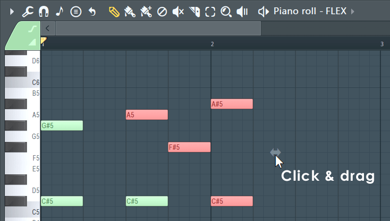
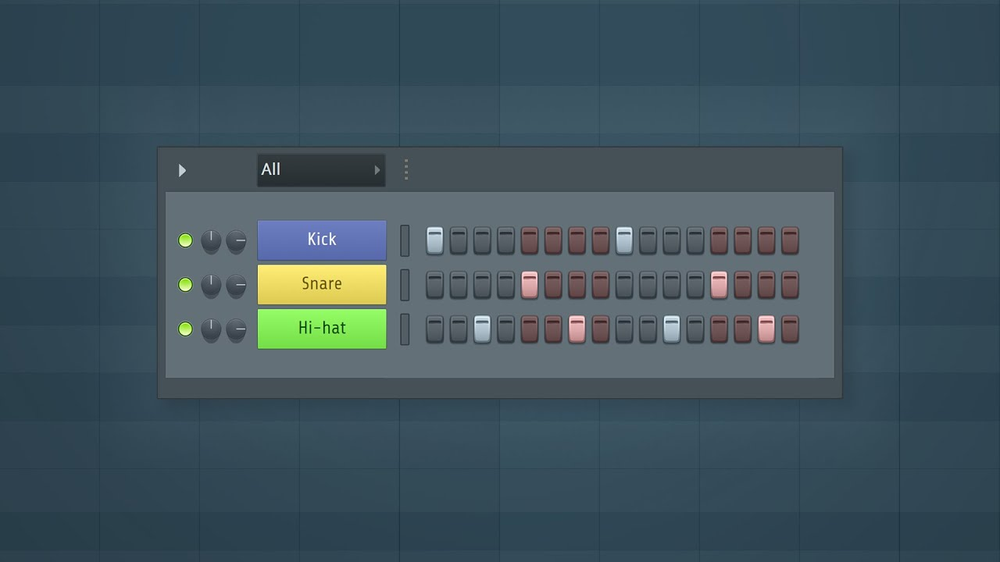
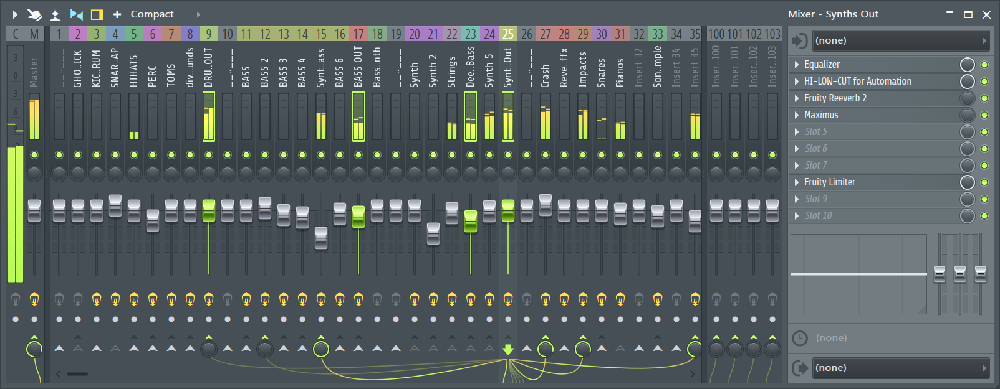
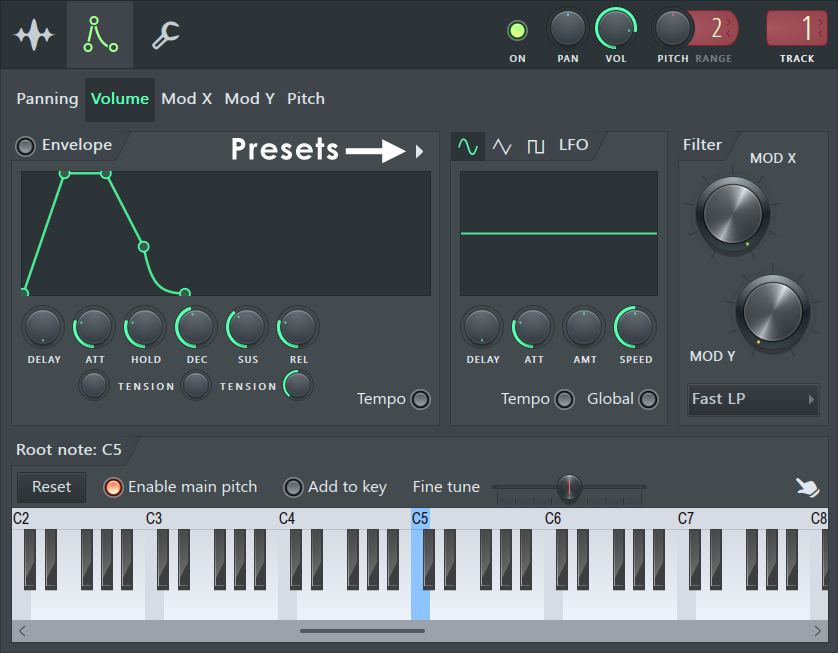

FL STUDIO
Digital Audio Workstation
About FL Studio
FL Studio is a Digital Audio Workstation (DAW) developed by Image-Line. It allows users to compose, record, edit, mix, and master music. With tools like the Piano Roll, Channel Rack, and Mixer, users can create melodies, build drum patterns, and add effects to their tracks. Its range of instruments and plugins makes it useful for beginners and experienced producers, helping them turn simple musical ideas into complete songs.
History
FL Studio began as FruityLoops, developed by Didier Dambrin at the Belgian company Image-Line. Sold from 1998, it started as a simple step sequencer for creating drum patterns and loops. Over time, it gained more instruments, effects, and tools for recording and editing music. It was later renamed FL Studio to reflect its growth into a complete digital audio workstation, allowing users to create entire songs within one program.
Features
Piano Roll

The piano roll is a feature in FL Studio that allows users to create and edit melodies, chords, and patterns. It provides a visual representation of musical notes on a grid, where the vertical axis represents pitch and the horizontal axis represents time. Users can click to add notes, adjust their length, and change their velocity. The piano roll also includes tools for quantization, note manipulation, and automation, making it a powerful tool for composing music.
Channel Rack and Step Sequencer

The channel rack and step sequencer are integral components of FL Studio, providing users with tools to manage and create musical elements. The channel rack allows for the organization and control of various instruments and effects, while the step sequencer enables the creation of rhythmic patterns and drum beats.
Mixer

The mixer in FL Studio is a crucial component for managing and adjusting the levels of various audio channels. It allows users to control volume, panning, and other audio parameters for each channel, providing precise control over the final mix.
Gallery


Editions
| Fruity Edition | Producer Edition | Signature Bundle | All Plugins Edition |
|---|---|---|---|
| Price: $99 | Price: $179 | Price: $269 | Price: $449 |
| Includes basic features for music production. | Includes advanced features and plugins for music production. | Includes all features and plugins in the Producer Edition, plus additional premium plugins. | Includes all features and plugins in the Signature Bundle, plus all additional plugins available from Image-Line. |
Lifetime Free Updates
When you buy FL Studio, you get lifetime free updates. This means that once you purchase the software, you will receive all future updates and new versions of FL Studio at no additional cost. This policy ensures that users always have access to the latest features and improvements without having to pay for upgrades.
Credits
Image Sources
https://www.image-line.com/fl-studio-learning/fl-studio-online-manual/html/img_shot/pianoroll_draghandle.png
https://i.ytimg.com/vi/uDVny0ruaUc/maxresdefault.jpg
https://www.image-line.com/fl-studio-learning/fl-studio-online-manual/html/img_shot/mixer_intro.png
https://www.image-line.com/static/assets/fl-studio-screen-demo-poster.626d38c.jpg
https://www.image-line.com/fl-studio-learning/fl-studio-online-manual/html/img_shot/chansettings_envinst.png
Video Sources
https://www.youtube.com/watch?v=3oKVpTHC-0M
https://www.youtube.com/watch?v=Mx7AnMUCDic
Color Pallete
https://www.color-hex.com/color-palette/66872